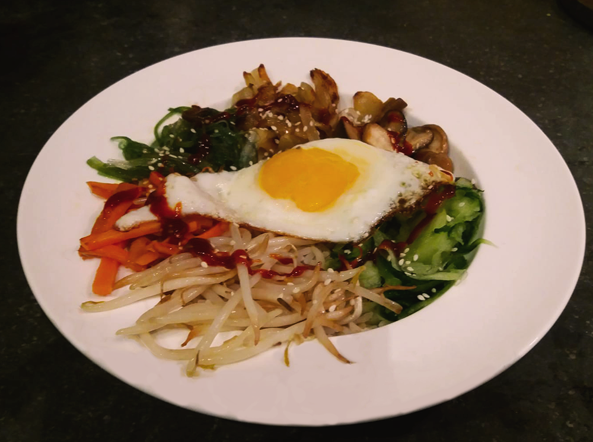

vietnamese pannenkoeken (banh xeo)

indonesische kippensoep (soto ajam)

vietnamese filodeegloempia uit de airfryer

gnocchi

coq au vin

kokossoep

pasta pesto

ijslandse lamssoep

hutspot uit eigen land

macedonische shopska salade

hawaiiaanse poké bowl

arabische falafel

koreaanse bibimbap
Dit gerecht uit de Koreaanse keuken betekent "gemixte rijst". Je mengt de ingrediënten dan ook door elkaar op je bord!

Bereidingsduur: 50 minuten
Aantal personen: 3
Ingrediënten:
250 gram rijst
1 ui
125 gram taugé
150 gram shii take paddestoelen
80 gram wortel
3 eieren
150 gram komkommer
4 eetlepels zeewier
1 eetlepel gochujang pasta of saus
1 handje sesamzaadjes
2 eetlepels ahornsiroop
250 gram rijst
1 ui
125 gram taugé
150 gram shii take paddestoelen
80 gram wortel
3 eieren
150 gram komkommer
4 eetlepels zeewier
1 eetlepel gochujang pasta of saus
1 handje sesamzaadjes
2 eetlepels ahornsiroop
Instructies:
1. Snijd de ui in ringen en de wortel julienne. Gebruik een spiraalsnijder om de komkommer mee in slierten te snijden.
2. Smelt boter in een kleine steelpan en bak de ui tot deze er glazig uit begint te zien. Karamelliseer de ui vervolgens op laag vuur ongeveer 20 minuten. Kook ondertussen de rijst volgens de instructies.
3. Bak de wortelstukjes tot deze een beetje knapperig zijn en haal van het vuur. Bak vervolgens de shiitake en taugé apart van elkaar in een paar minuutjes en haal van het vuur. Dek deze groenten af in aparte bakjes of kommetjes zodat het warm blijft.
4. Bak 3 eieren en laat de dooier heel. Maak ondertussen de saus klaar. Wanneer je deze te pittig vindt kun je wat extra ahornsiroop toevoegen.
5. Pak een kom of een diep bord en verdeel de rijst hierover. Verdeel de wortel, taugé, paddenstoelen, gekaramelliseerde ui, komkommer en zeewier over de rijst aan de randen van het bord. Het ei leg je in het midden. Bestrooi met sesamzaadjes en de saus. Smullen maar!
1. Snijd de ui in ringen en de wortel julienne. Gebruik een spiraalsnijder om de komkommer mee in slierten te snijden.
2. Smelt boter in een kleine steelpan en bak de ui tot deze er glazig uit begint te zien. Karamelliseer de ui vervolgens op laag vuur ongeveer 20 minuten. Kook ondertussen de rijst volgens de instructies.
3. Bak de wortelstukjes tot deze een beetje knapperig zijn en haal van het vuur. Bak vervolgens de shiitake en taugé apart van elkaar in een paar minuutjes en haal van het vuur. Dek deze groenten af in aparte bakjes of kommetjes zodat het warm blijft.
4. Bak 3 eieren en laat de dooier heel. Maak ondertussen de saus klaar. Wanneer je deze te pittig vindt kun je wat extra ahornsiroop toevoegen.
5. Pak een kom of een diep bord en verdeel de rijst hierover. Verdeel de wortel, taugé, paddenstoelen, gekaramelliseerde ui, komkommer en zeewier over de rijst aan de randen van het bord. Het ei leg je in het midden. Bestrooi met sesamzaadjes en de saus. Smullen maar!
Dit gerecht is ideaal om ook je restjes groenten in kwijt te kunnen!